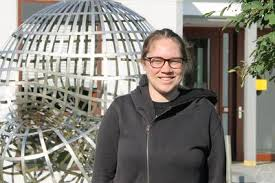

Date: Friday, September 12, 2025
Speaker: Alexia Yavicoli (University of British Columbia)
Title: On the Erdos similarity problem
Abstract: I will introduce the Erdős similarity problem, providing background and an overview of known partial results. I will then discuss a recent joint work with P. Shmerkin, in which we show that Cantor sets with positive logarithmic dimension satisfy the conjecture.

Date: Friday, September 18, 2025
Speaker: Vishal Gupta
Title: Minimum spectral radius in a given class of graphs
Abstract: In 1986, Brualdi and Solheid posed the question of determining the maximum and minimum spectral radius of a graph within a given class of simple graphs. Since then, this problem has been extensively studied for various graph classes. In this talk, I will discuss two such classes: simple connected graphs with a given order and size, and simple connected graphs with a given order and dissociation number. This presentation is based on joint work with Sebastian Cioaba, Dheer Noal Desai, and Celso Marques.

Date: Thursday, October 2, 2025
Speaker: Will Burstein
Title: Bourgain's theorem near
Abstract: We are going to prove a sharp variant of Bourgain's celebrated theorem on Orlicz spaces near We are also going to discuss applications to exact signal recovery.
Date: Wednesday, October 15, 2025
Time: 3.30 p.m.
Speaker: Igor Pak (UCLA)
Title: Counting trees and continued fractions
Abstract: In combinatorics, a typical question asks to count the number of combinatorial objects of a certain kind, e.g. the number of spanning trees or perfect matchings in a given graph. In the past few years, the inverse question has also become popular, e.g. what is the smallest size graph which has a given number of spanning trees, or of a given number of perfect matchings? These questions turned out to be deeply related to classic problems and results in number theory.
In the first part of the talk I will give a brief overview of several combinatorial functions where this inverse problem has been resolved. I will also discuss a connection between two problems discussed above and Zaremba type results on continued fractions. I will conclude with a discussion of our latest joint work with Chan and Kontorovich which gives best known bounds for spanning trees.
Date: Thursday, November 6, 2025, 3.30 p.m. (postponed)
Speaker: Sarah Tammen (University of Wisconsin)
Title: Incidences of hyperplane slabs in the unit cube
Abstract: I will discuss incidence estimates for slabs which are formed by intersecting small neighborhoods of well-spaced hyperplanes in R^d with the unit cube [0,1]^d. My work is an analogue of a theorem of Guth, Solomon, and Wang, who proved a version of the Szemerédi- Trotter theorem for thin tubes that satisfy a certain strong spacing condition. My proof uses induction on scales and the high-low method of Vinh, along with geometric insights.

Date: Thursday, November 13, 2025, 3.30 p.m.
Speaker: Angela Morrison (University of Calgary)
Title: If a Vector Falls in the Forest, Is It Still a Circuit: Tracing Flows, Forests, and the Circuits That Connect Them
Abstract: Combinatorial optimization problems such as min-cost flow, max flow, and shortest path have long been studied through specialized algorithms that share deep connections with the Simplex method and circuit augmentation frameworks. In recent work, we develop a unified geometric view of these relationships by extending classical flow models to pseudoflows—flows that respect arc capacities but may temporarily violate balance constraints. By introducing the pseudoflow polyhedra and characterizing their fundamental directions, or circuits, we can interpret several well-known algorithms as particular walks in these polyhedra. This framework shows that the Successive Shortest Path, Shortest Augmenting Path, and Preflow-Push algorithms correspond to (non-edge) circuit walks, while the Hungarian Method traces an edge walk equivalent to a primal Simplex pivot sequence. Together, these insights provide a common geometric umbrella that connects seemingly different combinatorial algorithms through the lens of circuit augmentation.
In a complementary direction, we study how the structure of linear and combinatorial optimization problems affects the geometry of these circuit walks. Using the notion of circuit imbalance as a measure of geometric complexity, we identify common constraint patterns—especially in graph-theoretic settings—that can lead to highly unbalanced circuits, posing challenges for general augmentation schemes. At the same time, certain problems, such as the maximum weight forest problem, admit well-structured subsets of circuits that are both interpretable and well-behaved, enabling short walks and bounded circuit diameters. This highlights how, despite potential geometric complexity, meaningful algorithmic behavior often arises from simple, structured subsets of circuits.